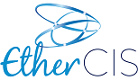
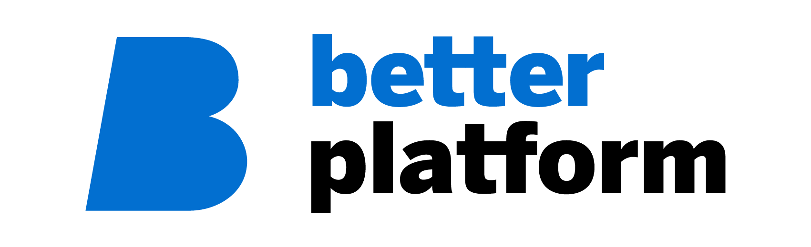
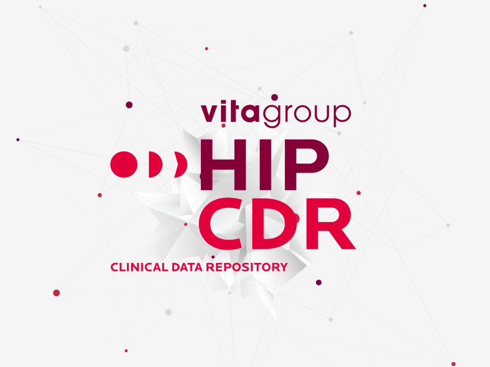
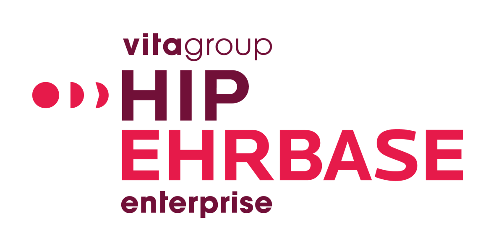
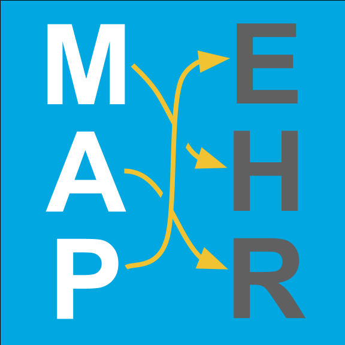
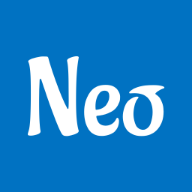

Platform
Free to use & open source
| Product | Description | Technology | Platform | Resources | |||
|---|---|---|---|---|---|---|---|
EHRbase |
EHRbase is an open source software backend for clinical application systems and electronic health records. EHRbase strives to give organizations a modern, standard-compliant and bedrock-solid foundation for their mission critical business operations and their next generation eHealth solutions. All services are accessible through the official openEHR REST API, including endpoints for the Archetype Query Language. Find more about EHRbase here. |
Java 11, Postgres 11, Spring Boot, JOOQ | All | ||||
EHRServer |
EHRServer is an open source, service‐oriented, openEHR clinical data repository. It provides a secure REST API to store and query clinical data in many ways, supporting standard formats like JSON and XML, that are easy to integrate with any front‐end application. Data queries can be created via the Administrative User Interface, with the powerful and easy to use EHRServer Query Builder. EHRServer complies with the openEHR specifications , leveraging the openEHR Information Model and the Dual Modeling methodology, using standard Archetypes and Templates.
|
Grails, Groovy, Java, PHP, JavaScript | All | ||||
EtherCIS |
EtherCIS (Ethereal Clinical Information System) is an Open Source platform compatible with the openEHR standard. It is designed to allow simple interactions with clients using RESTful API and persist clinical data in a separate DB engine. (more). |
Java, Postgres | All |
Commercial
| Product | Description | Platform | Resources | ||
|---|---|---|---|---|---|
Base24 |
An advanced Clinical Data Repository that functions as an inexhaustible source of health data, based on the openEHR specifications. |
All | |||

Better Platform |
Better Platform is a big-data, high-performance solution designed to store, manage, query, retrieve and exchange structured electronic health record data based on the latest release of openEHR specifications. All clinical information is stored in vendor-independent archetypes and templates, allowing standard data entry and retrieval with terminology-based validation. |
All | |||
DIPS Arena |
DIPS EPR is a robust, reliable electronic patient record system, running 24/7 across the country in 73% of Norwegian hospitals. In fact, five of the seven university hospitals in Norway use DIPS EPR, providing vital functionality to 57,000 professional users. The DIPS EPR systems cover a wide range of products:
|
All | |||
EHR DB |
EHRDB is a database and platform for building healthcare IT solutions with openEHR standards:
|
All | |||
EHR Docs |
EHR Docs is a storage for electronic documents which is digitally signed by clinicians:
|
All | |||
EHR Forms |
EHR Forms is a WYSIWYG form builder based on openEHR:
|
All | |||
EHR Index |
EHR Index is a solution for building fast and high load applications using openEHR platforms: |
All | |||
EHR Locator |
EHR Locator is designed to migrate clinical patient data (EHR) between multiple repositories: |
All | |||
Fluance Five |
This web based EHR is using "Better Platform" and "Better OPENeP". Our innovative modular open source product is Swiss- and tailor-made. You can have it in the cloud or on premise. It’s responsive and usable on any device. |
All | |||
Health Passport |
The Health Passport is an innovative solution to store and utilise patient health data in accordance with open standards — with the added benefit of blockchain technology. The platform is designed to empower patients, whilst delivering the following benefits:
The platform can be used in general practice, hospitals or in social care, as well as incorporating health data from other sources such as wearables — health monitors and IoT devices. This provides patients with a single, secure point of access to their health information and control over how it is used. Medicalchain’s Health Passport will allow the patient to access their health data all in one place, through their mobile app or web browser. |
All | |||

HIP CDR |
HIP Clinical Data Repository (CDR): Advanced Digital Health Data Platform HIP CDR is an innovative digital health data platform built on the openEHR framework to store the healthcare data from different sources. It is designed for creating complex, essential data-intensive applications in the healthcare sector. As a fully managed platform, HIP CDR offers comprehensive capabilities in data governance, seamless system integration, and efficient transaction handling, making it a vital resource for healthcare professionals, researchers, healthcare solution developers and municipal system of records and health regions looking for centralized and vendor-neutral data storage
Key Features:
|
Linux | |||

HIP EHRbase |
Robust and lightweight openEHR backend for your mission-critical eHealth infrastructures.
|
||||

MapEHR |
Legacy EHR data migration to openEHR with YAML mapping with full OO programming language for data transformation inside YAML. |
||||
MedicalFlows - Workflows |
Orchestrating executable medical workflows with support for openEHR CDR. Clinical pathways, clinical guidelines, clinical protocols, clinical workflows, clinical best practices, task planning, care coordination plans, care pathways, nursing care plans, clinical process modeling, medical process modeling, healthcare practice patterns, plans and decision logic, process and reasoning models,... There are so many different names to describe what these diagrams represent - I call them Medical Flows.
|
||||
OceanEHR eHealth platform |
OceanEHR eHealth platform - Ocean Health Systems' OceanEHR platform provides a proven, highly available, greatly scalable, completely flexible and standards based environment for a modern (and future-proof) electronic health record. OceanEHR provides a complete platform for building modern applications for any need across the spectrum of health including cloud-based, SAAS and mobile systems. |
||||

openEHR Forms |
Select operational templates you wish to use in the same application. Click generate. Wait 10 seconds. Your application is ready. It is a Flutter app that runs on:
When you change your templates or there is a new releases of major archetypes, you re-run the generator and few seconds later, your applications and forms are rebuilt and ready to use. With NeoEHR, you will get results faster, eliminate usage fees, retain high customization capabilities and full control over the codebase of your solution.
|
All |